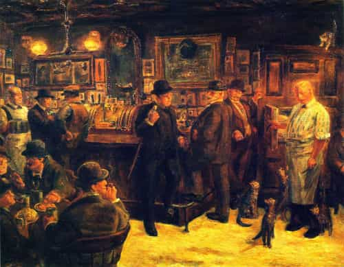

It’s important to know when to break up with your girlfriend. Follow these seven guidelines so you’ll be able to trust your judgement when doing so. Otherwise, you may think you’re sick of our girlfriend when really you’re just sick of yourself.
To stay interested in our girlfriend, we need to be careful who we make a girlfriend. One way to develop a screening system is to date at least 12 girls over 12 months, then use the experience to make a list of seven qualities that you want in a girlfriend. The next girl you date after the initial 12 should have those seven qualities.
If you do this and then begin to feel doubt that you can do better, rest assured that your anxiety is only coming up with reasons to break up with her to avoid long-term intimacy.
Of course we need a purpose that’s prioritized before our relationship. But this principle can only be put into practice when we have a space in our home away from the girlfriend. For the sake of symbolism, put your space on the top floor. Without such a retreat you become enmeshed with the battiness of the female mind and invariably grow to resent it.
I used to run a therapy group in which one of the patients didn’t tell his wife he was at therapy every Thursday night. He told her he was staying late at work. Everybody else in the group thought he needed to come clean but I defended him. It’s healthy to keep secrets as long as you’re not pretending to be someone you’re not.
This is especially true if what you’re keeping secret is something your girlfriend would appreciate. Besides, you’re going to keep secrets anyway so you might as well keep the process conscious.
Familiarity breeds contempt, yes, but even worse is disinterest. Keep a few projects and adventures to yourself and it’ll feel like you’re still in the dating phase.

This one is worth repeating. When I don’t hang out with my guy friends for a while, I end up treating my girlfriend like she’s a guy. I challenge her in ways I would only challenge another man and when she responds by looking at me sideways I resent her.
It’s helpful to remember your girlfriend is a female and only flourishes in comfort. I’ve known this for years but I can only act as through it’s true after I spend a few hours riffing with a buddy in a cigar room.
We’ve all heard guys say something like, “I dated my ex for six years but we broke up because the magic left the relationship.” Yeah, no kidding. The magic is supposed to leave the relationship. This indicates something we have a difficult time coming to terms with as the culture becomes more transfixed by instant gratification: relationships aren’t for you—they’re for taking care of things, namely children. Even with a dog you’ll see the true purpose of the relationship isn’t to go out to dinner but to direct and nurture the next generation.
It’s like starting a business. We do it to provide a service and make money, but it runs the risk of becoming meaningless if we don’t help employees become better people. Relationships and companies without a contribution have neither soul nor intrigue.
My favorite part about being single was the cold approaching. It’s a challenge that refined my psychology and it’s how I eventually met my girlfriend. Then I settled down and resented my girlfriend for wanting me to herself.
Thankfully I discovered cold calling, an outlet for my need to take social risks and reach out and engage with others. Whenever I begin to feel the urges of the season I come up with a reason to call someone in a related field with either a request or an offer. I thought I needed to babe hound but it turns out I only needed a way to challenge myself in the modern duel that is salesmanship.
Never trust yourself enough to not watch porn or go to strip clubs. You’re a dude so you’re going to compare your girlfriend with other girls and it has nothing to do with the attractiveness of your girlfriend. My girlfriend’s butt smells awesome but whenever I go to a strip club and smell a butt that’s mellifluous in a different way, I unconsciously begin to think, “Maybe it’s time to break up.”
Odysseus tied himself to the mast of his ship when passing the sirens because he knows he wouldn’t be able to control himself. Like Odysseus, we may be capable of heroism but that doesn’t mean we cannot burn seven years of our life hanging out with a nymph when what we ultimately want is to get home to our Penelope.
If a girl loses interest in her boyfriend, of course it’s his fault. But if a man loses interest in his girlfriend, it’s his fault too. That’s the price men must pay for the privilege of not being a girl.
Read More: How To Make Her Your Girlfriend